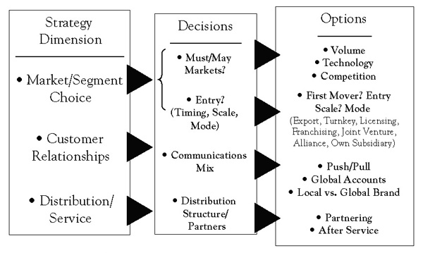

Few companies can afford to enter all markets open to them. Even the world’s largest companies such as General Electric or Nestlé must exercise strategic discipline in choosing the markets they serve. They must also decide when to enter them and weigh the relative advantages of a direct or indirect presence in different regions of the world. Small and midsized companies are often constrained to an indirect presence; for them, the key to gaining a global competitive advantage is often creating a worldwide resource network through alliances with suppliers, customers, and, sometimes, competitors. What is a good strategy for one company, however, might have little chance of succeeding for another.
Figure 5.1 Market Participation
The track record shows that picking the most attractive foreign markets, determining the best time to enter them, and selecting the right partners and level of investment has proven difficult for many companies, especially when it involves large emerging markets such as China. For example, it is now generally recognized that Western carmakers entered China far too early and overinvested, believing a “first-mover advantage” would produce superior returns. Reality was very different. Most companies lost large amounts of money, had trouble working with local partners, and saw their technological advantage erode due to “leakage.” None achieved the sales volume needed to justify their investment.
Even highly successful global companies often first sustain substantial losses on their overseas ventures, and occasionally have to trim back their foreign operations or even abandon entire countries or regions in the face of ill-timed strategic moves or fast-changing competitive circumstances. Not all of Wal-Mart’s global moves have been successful, for example—a continuing source of frustration to investors. In 1999, the company spent $10.8 billion to buy British grocery chain Asda. Not only was Asda healthy and profitable, but it was already positioned as “Wal-Mart lite.” Today, Asda is lagging well behind its number-one rival, Tesco. Even though Wal-Mart’s UK operations are profitable, sales growth has been down in recent years, and Asda has missed profit targets for several quarters running and is in danger of slipping further in the UK market.
This result comes on top of Wal-Mart’s costly exit from the German market. In 2005, it sold its 85 stores there to rival Metro at a loss of $1 billion. Eight years after buying into the highly competitive German market, Wal-Mart executives, accustomed to using Wal-Mart’s massive market muscle to squeeze suppliers, admitted they had been unable to attain the economies of scale it needed in Germany to beat rivals’ prices, prompting an early and expensive exit.
What makes global market selection and entry so difficult? Research shows there is a pervasive the-grass-is-always-greener effect that infects global strategic decision making in many, especially globally inexperienced, companies and causes them to overestimate the attractiveness of foreign markets.Ghemawat (2001). As noted in Chapter 1 "Competing in a Global World", “distance,” broadly defined, unless well-understood and compensated for, can be a major impediment to global success: cultural differences can lead companies to overestimate the appeal of their products or the strength of their brands; administrative differences can slow expansion plans, reduce the ability to attract the right talent, and increase the cost of doing business; geographic distance impacts the effectiveness of communication and coordination; and economic distance directly influences revenues and costs.
A related issue is that developing a global presence takes time and requires substantial resources. Ideally, the pace of international expansion is dictated by customer demand. Sometimes it is necessary, however, to expand ahead of direct opportunity in order to secure a long-term competitive advantage. But as many companies that entered China in anticipation of its membership in the World Trade Organization have learned, early commitment to even the most promising long-term market makes earning a satisfactory return on invested capital difficult. As a result, an increasing number of firms, particularly smaller and midsized ones, favor global expansion strategies that minimize direct investment. Strategic alliances have made vertical or horizontal integration less important to profitability and shareholder value in many industries. Alliances boost contribution to fixed cost while expanding a company’s global reach. At the same time, they can be powerful windows on technology and greatly expand opportunities to create the core competencies needed to effectively compete on a worldwide basis.
Finally, a complicating factor is that a global evaluation of market opportunities requires a multidimensional perspective. In many industries, we can distinguish between “must” marketsThose markets in which a firm must compete in order to realize its global ambitions.—markets in which a company must compete in order to realize its global ambitions—and “nice-to-be-in” marketsMarkets in which participation is desirable but not critical.—markets in which participation is desirable but not critical. “Must” markets include those that are critical from a volume perspective, markets that define technological leadership, and markets in which key competitive battles are played out. In the cell phone industry, for example, Motorola looks to Europe as a primary competitive battleground, but it derives much of its technology from Japan and sales volume from the United States.